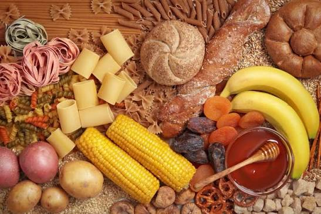

Carboidratos
Glicídios que fornecem energia imediata para os seres vivos.
Saiba maisEstudante: Nome do Aluno | Turma: 3º Ano Informática
Explore os tópicos essenciais sobre polímeros e biomoléculas fundamentais à vida.
Glicídios que fornecem energia imediata para os seres vivos.
Saiba maisMoléculas insolúveis em água, fundamentais na reserva de energia.
Saiba maisPolímeros de aminoácidos com funções estruturais e enzimáticas.
Saiba maisDNA e RNA, responsáveis pela informação genética.
Saiba maisMacromoléculas formadas por unidades repetitivas (monômeros).
Saiba maisNenhum tema encontrado. Tente outra busca.

Carboidratos: Fontes primárias de energia imediata para o organismo.